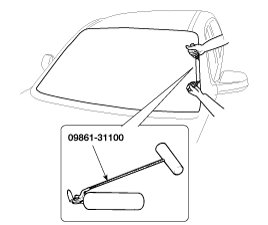
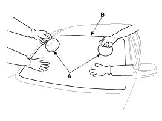
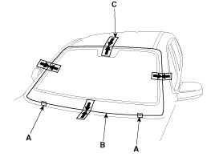
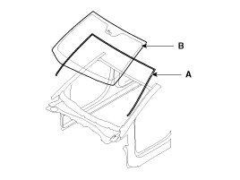
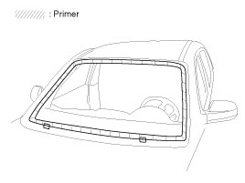
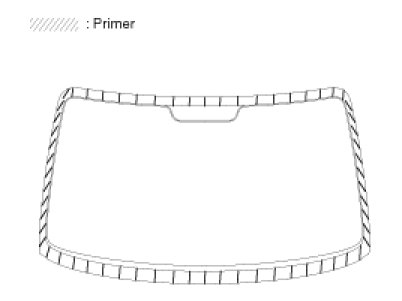
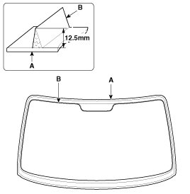
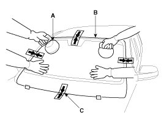

Repair Procedures
Replacement
Removal
NOTE:
- Put on gloves to protect your hands.
- Use seat covers to avoid damaging any surfaces.
1. Remove the following items.
A. Front pillar trim
B. ECM mirror
C. Rain sensor
D. Auto defog sensor
E. Windshield wiper arm
F. Cowl top cover
2. Cut out the windshield sealant using the sealant cutting tool (09861-31100).

NOTE:
- Do not scrape down to the painted surface of the body; damaged paint will interfere with proper bonding.
- Remove the rubber dam and fasteners from the body.
- Mask off surrounding surfaces before painting.
3. Remove the windshield glass (B) carefully using the glass holder (A).

Installtion
1. With a knife, scrape the old adhesive smooth to a thickness of about 2mm (0.08 in.) on the bonding surface around the entire windshield opening flange:
A. Do not scrape down to the painted surface of the body; damaged paint will interfere with proper bonding.
B. Remove the rubber dam and fasteners from the body.
C. Mask off surrounding surfaces before painting.
2. Clean the bonding surface with a sponge dampened in alcohol. After cleaning, keep oil, grease and water from getting on the clean surface.
3. Install the spacer (A) install the windshield glass (B) temporarily with marking sure to position them on the center, and then place the alignment mark (C).

4. Install the windshield glass (B) windshield side molding (A).

5. With a sponge, apply a light coat of body primer to the original adhesive remaining around the windshield opening flange. Let the body primer dry for at least 10 minutes.
A. Do not apply glass primer to the body, and be careful not to mix up glass and body primer sponges.
B. Never touch the primed surfaces with your hands.
C. Mask off the dashboard before painting the flange.

6. Apply a light coat of glass primer to the outside of the fasteners.
NOTE:
- Never touch the primed surface with your hand. If you do, the adhesive may not bond to the glass properly, causing a leak after the windshield glass is installed.
- Do not apply body primer to the glass.
- Keep water, dust, and abrasive materials away from the primer.

7. Pack adhesive into the cartridge without air pockets to ensure continuous delivery. Put the cartridge in a caulking gun, and run a bead of adhesive (B) around the edge of the windshield glass (A) between the fastener and molding as shown. Apply the adhesive within 30 minutes after applying the glass primer. Make a slightly thicker bead at each corner.

8. Use suction cups (A) to hold the windshield glass (B) over the opening, align it with the alignment marks (C) made in step 15, and set it down on the adhesive. Lightly push on the windshield until its edges are fully seated on the adhesive all the way around. Do not open or close the doors until the adhesive is dry.

9. Scrape or wipe the excess adhesive off with a putty knife or towel. To remove adhesive from a painted surface or the windshield, wipe with a soft shop towel dampened with alcohol.
10. Let the adhesive dry for at least one hour, then spray water over the roof and check for leaks. If a leak occurs, let it dry, then seal with sealant :
A. Let the vehicle stand for at least four hours after windshield installation. If the vehicle must be driven within 4 hours, it must be driven slowly.
B. Keep the windshield dry for the first hour after installation.
11. Installation the following items.
A. Cowl top cover
B. Windshield wiper arm
C. Auto defog sensor
D. Rain sensor
E. ECM mirror
F. Front pillar trim